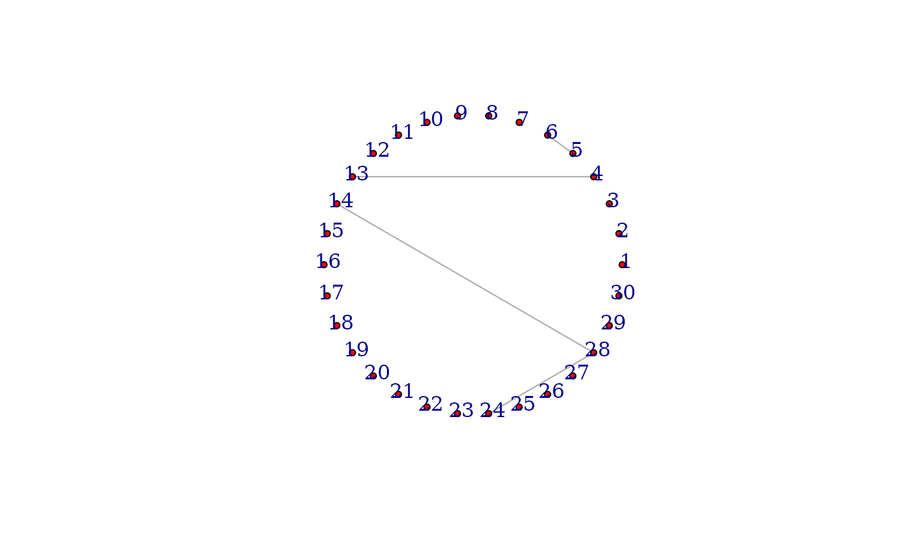

Get the estimated partial correlation graph without information incorporation
clevel.Rdclevel() is the function to apply the method originally proposed in paper '> Qiu, Y., & Zhou, X. H. (2020). Estimating c-level partial correlation graphs with application to brain imaging. It is used to get the estimated partial correlation graph without information incorporation.
Arguments
- df
The main expression dataset, an n by p matrix, in which each row corresponds to a sample and each column represents expression/abundance of an omics feature.
- lambda
The regularization parameter, used in the node-wise regression. If missing, default lambda will be used which is at the order of sqrt(2*log(p)/n).
Value
A list. The list contains estimated partial correlation matrix (Est), sparse partial correlation estimation matrix with threshold (EstThresh), estimated kappa (kappa), estimated test statistics matrix of partial correlations (tscore), sample size (n) and number of nodes (p).
Examples
library(igraph)
library(tidyverse)
library(PCGII)
library(mvtnorm)
# Simulating data
set.seed(1234567)
n=50 # sample size
p=30 # number of nodes
omega=make_random_precision_mat(eta=.01, p=p)
# population covariance matrix, which is used to generate data
Sigma=solve(omega)
# simulate expression data
X = rmvnorm(n = n, sigma = Sigma)
lam=2*sqrt(log(p)/n) ## fixed lambda
CLEVEL_out=clevel(df=X, lambda = lam)
inference_out=inference(list=CLEVEL_out)
diag(inference_out)=0
net=inference_out %>% graph_from_adjacency_matrix(mode = "undirected")
net %>% plot(vertex.size=4, vertex.label.dist=0.5, vertex.color="red", edge.arrow.size=0.5, layout=layout_in_circle(net))

## Remark: mathematical standardization will be automatically done within the function.